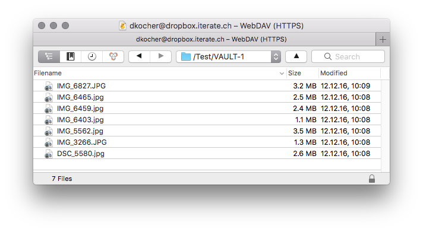
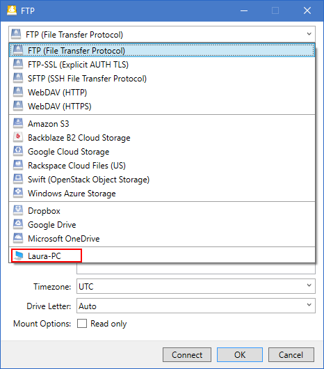

Cryptomator¶

Support for client-side encryption with cryptomator interoperable vaults to secure your data on any server or cloud storage.

The client-side encryption feature in Cyberduck and Mountain Duck is based on the excellent concepts and work of Cryptomator. Cryptomator is free and open-source software. Since Cyberduck is also open-source software anyone is able to audit the source code. That means no security by obscurity, no hidden backdoors from third parties, no need to trust anyone except yourself.
Compared to other client-side-encryption solutions the Cryptomator based approach yields a few crucial advantages:
in addition to file content encryption also file and directory names are encrypted and directory structures obfuscated
no online services, no subscriptions, no accounts
no need to share your cloud storage provider credentials
Create new Vault¶
You can create a new vault directory anywhere on your remote storage. This will initialize the vault with a masterkey.cryptomator. A backup of the master key file (masterkey.cryptomator) is saved in user defaults. The encrypted keys in masterkey.cryptomator are not more sensitive than the encrypted files in the vault. For technical aspects, refer to Masterkey Derivation.


{kind=link}
{kind=link}
Unlock Vault¶
Discovery¶
When Preferences → Cryptomator → Auto detect and open vault in browser is enabled, opening a directory in the browser that is a Cryptomator vault, a prompt is displayed to unlock the vault using the provided passphrase and decrypt the directory and filenames. If you cancel the prompt, the encrypted vault content is displayed.


Manual¶
Choose the Cryptomator button in the toolbar or the option in the File menu to unlock and lock a Cryptomator vault.
Save Passphrase¶
You can check Add to Keychain to save the passphrase to open the vault with the master key file in your login keychain. The checkbox is disabled by default. Another application that wants to access the vault passphrase from the login keychain will trigger a permission prompt.

On macOS, manage your passwords with Keychain Access.app on Mac. Refer to Keychain for Mac: Keychain Access overview.
On Windows, passwords are saved in the Credential Manager. You can view and delete your saved login information in Control Panel → User Accounts → Credential Manager → Windows Credentials.
File Transfers¶
File transfers require you to unlock the vault again unless you have chosen to save your vault passphrase in the keychain.
Browser¶
You can open and browse multiple vaults on a server in a single browser window. For each vault to be opened you will be prompted to enter your passphrase to decrypt the filenames. Decrypted filenames when browsing a vault will show a padlock overlay icon.
{kind=link}
Moving files into vault¶
You can move files from and to the vault. Because files need to be encrypted or decrypted respectively they pass through your local computer and cannot be moved on the server-side.
Note
The vault must be unlocked before you move files to it, otherwise the files won’t be encrypted.
Access vaults on local disk¶
Both Cyberduck and Mountain Duck support browsing your local disk to access vaults created on your computer. Create a new bookmark to connect to your local disk.
{kind=link}
In your local disk connection, you can access all directories which are saved on your local disk. This includes for example your local synchronized Dropbox, Google Drive and OneDrive directories.
Access a Cryptomator vault on local disk on the example of Dropbox
Navigate to the Dropbox directory and open the subdirectories until you reach your Cryptomator vault.
Double click your vault.
Type your set password in the password box. If you want you can save the password for easier access to this directory for further usage.


Click the Continue button and your Vault should open.
Known Limitations¶
Changing the vault passphrase is currently not supported.
To delete a vault it cannot be unlocked. Choose Cancel in the vault password prompt to skip unlocking the vault after selecting the vault folder for delete.
Security Architecture¶
Preferences¶
Auto detect¶
Uncheck Preferences → Cryptomator → Auto detect and open vault in browser to disable opening vaults by default when opening the vault directory in the browser.